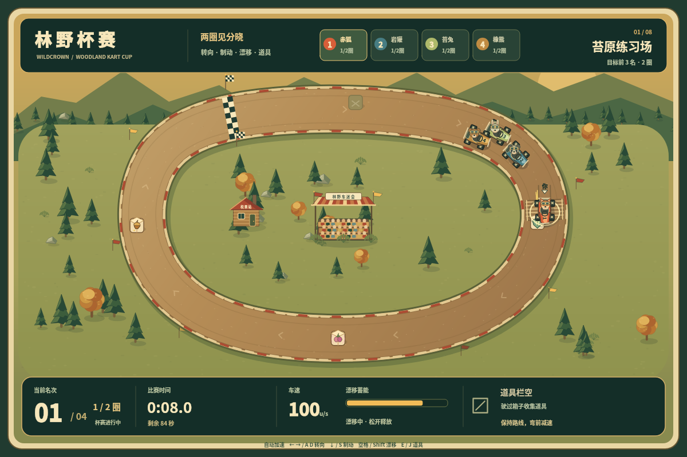
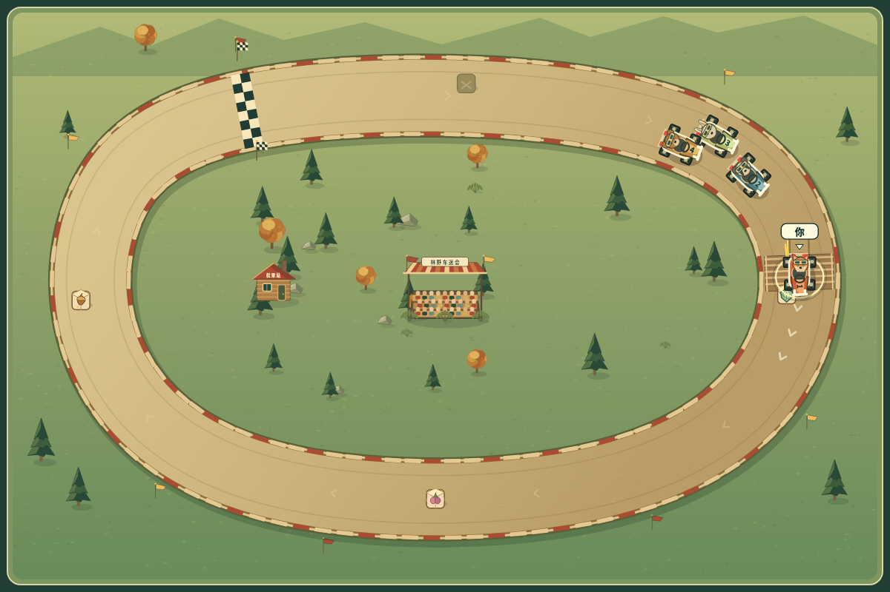

玩 v2 · 保留的 v1 · Mario Kart 系列图鉴
读得懂弯，才有追风的乐趣。
林野杯赛是参考 Mario Kart 系列通用机制的原创俯视竞速实验。参照代际尚未确定；这里以 Nintendo 官方手册核对具体机制，不将不同作品拼成一套“完整复刻”。
原系列为什么值得玩
- 一段弯道有起伏：读弯、挑路线、漂移积累，再判断出弯释放的时机。火花把这个选择变成看得见的期待。Nintendo《Mario Kart 7》手册，第 5 节
- 道具让你关注对手和时机，落后也仍有翻盘的期待。原系列部分作品会按名次影响取得强道具的机会。Nintendo 官方《Mario Kart 8 Deluxe》教程
- 记住弯道、学会守路和贴内线，使下一场有具体可改善之处。这里的设计判断是：清楚的路线反馈，比新增一个赛道数字更重要。
本轮 v2 到底改了什么
保留八条原创赛道、四车双圈、三种原创道具及原有 AI/物理。主要 HUD 放在画布外一处，画布回到赛道；车辆前鼻、头灯、尾灯和车手朝向更清楚；前方短段路面箭头与文字提示帮助读弯。
漂移白火表示正在积累，蓝火表示达到原有 0.55 秒释放门槛，金火表示已积累至少 1.15 秒。金色只是连续蓄力中的视觉里程碑，不是新增一档物理奖励。冲刺时长仍遵循原来公式。持有脉冲时，只标记真实范围内、没有护盾的未完赛对手；屏幕远处没有额外目标情报。


一个可试的玩法选择
在弯中按住漂移，见到蓝火后等出口再松开；对比过早松手和带着蓄力出弯的速度差。拿到冲刺先看前方是否急弯，拿到脉冲先看范围内有没有有效目标。道具不会代替选线。
可选弯道辅助，默认关闭
起跑前可开启，比赛中不能切换。它通过普通转向输入补偿 75% 弯道曲率并稳住车头，不自动追中线、刹车、释放漂移或用道具。仍需左右修正路线，错误持续转向和完全不操作都会失利。辅助标记跟随当前局、暂停恢复和结算，手动与辅助最佳成绩分开。赛道、AI 和胜负目标相同。
明确的实现差异
- 本作是全局俯视四车场景，延续原创森林插画风格；这轮并非完整美术换代。
- 固定种类补给箱由四车共享，没有按落后名次发放强道具的追赶平衡，不能宣称复现原作翻盘体系。
- 没有授权角色、原作赛道/音画、反重力、联网或完整系列模式。可选曲率补偿也不等同 Nintendo 的 Smart Steering。
- 本轮模型、事件与保存回归已可复现；公网整场驾驶、400px 布局和真实触屏体验仍应单独验收。离屏图片不能替代它们。